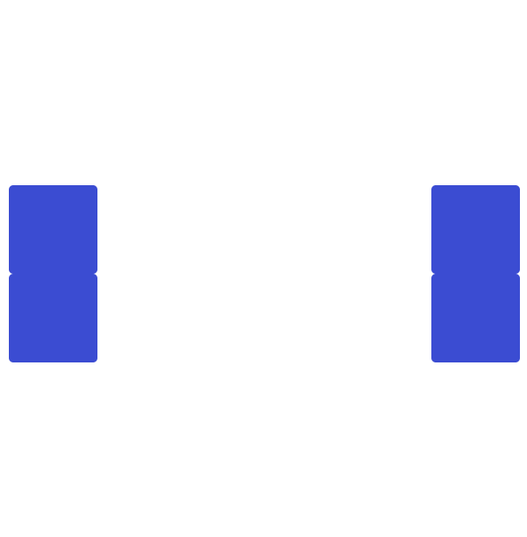
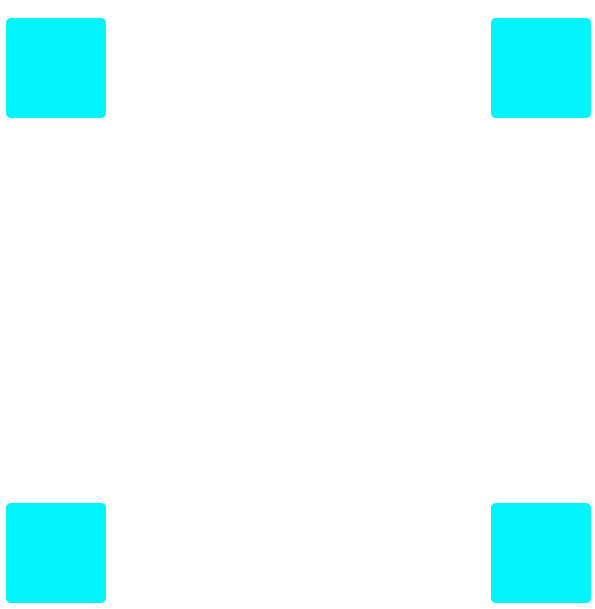
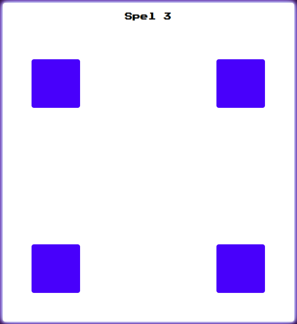
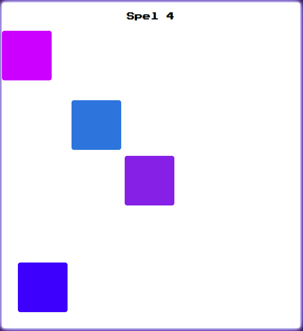

Spel 1
Målet är att rensa bort alla fyrkanter. För att rensa bort dem så klickar man på dem.
Spel 2
Samma princip som i det andra spelet. Skillnaden är att fyrkanterna rör sig snabbare.
Spel 3
Samma princip som i det andra och tredje spelet fast med en skillnad. En av fyrkanterna är en fälla, och om spelaren trycker på denna så förloras spelet.
Spel 4
När muspekaren hålls över den innersta färglagda fyrkanten så kommer den att förstoras propotionerligt åt alla håll. När fyrkantens yttersa sidor överlappar med dem svarta linjerna ska spelaren trycka med musen för att vinna. Om spelaren trycker när dessa inte överlappar förloras spelet.
